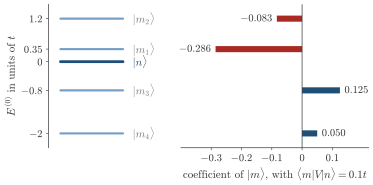
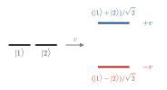

Page 3 of 15 of this session
9.3 Linear response and perturbation theory in detail
What is the first change of an eigenstate of \(H_0\) when we add a small perturbation \(V\)? We will now see that each state mixes with all the others, with the matrix element of \(V\) divided by the energy difference, so that close levels mix the most. We will also see three cases where this expansion fails.
In Section 9.2 the response was the derivative \(\chi=\partial M/\partial H\) of a classical magnet. Let us now build the quantum version of this idea, since everything that follows is based on it. We split the full Hamiltonian into an unperturbed part \(H_0\), which can be a metal, a superconductor, a quantum magnet or any system that we study, and a perturbation \(V\). We also add a coupling constant \(\lambda\) that helps us keep track of the orders, and at the end we will set it to one.
\[H(\lambda) = H_0 + \lambda V, \qquad \lambda = 0 \;\text{(pristine)}, \quad \lambda = 1\;\text{(full perturbation)}. \tag{9.2}\]
Every observable of the system, such as energies, densities, magnetizations and the wavefunctions themselves, becomes a function of \(\lambda\) once we fix \(H(\lambda)\). If this function is smooth enough to make a Taylor expansion around \(\lambda=0\), and later we will see when this assumption fails, then for any observable \(A\) we have
\[A(\lambda) = A^{(0)} + \lambda\, \chi_A + O(\lambda^2), \qquad \chi_A \equiv \left.\frac{\partial A}{\partial \lambda}\right|_{\lambda=0},\]
and by definition \(\chi_A\), the first-order coefficient, is the response function that we have been talking about in this session. To compute \(\chi_A\) for a generic observable, we first need the perturbed wavefunctions. We expand an unperturbed eigenstate \(|n\rangle\) of \(H_0\), with energy \(E_n^{(0)}\), in the full basis \(\{|m\rangle\}\) of \(H_0\). Standard Rayleigh-Schrödinger perturbation theory then gives the perturbed state to first order in \(\lambda\), away from any degeneracy.
To first order in \(\lambda\), and when no other level has the energy \(E_n^{(0)}\), the eigenstate \(|n\rangle\) of \(H_0\) becomes
\[|n(\lambda)\rangle = |n\rangle + \lambda \sum_{m \neq n} \frac{\langle m|V|n\rangle}{E_n^{(0)} - E_m^{(0)}} \, |m\rangle + O(\lambda^2). \tag{9.3}\]
A perturbation mixes \(|n\rangle\) with every other state \(|m\rangle\), with the matrix element of \(V\) divided by the energy difference, so the levels that are close in energy mix the most.
The steps From H(lambda) to the first-order state (9.3)
Let us start with the simplest case, which is two levels. We take \(H_0=\mathrm{diag}(0,\Delta)\) with \(\Delta>0\) and \(V=v\sigma_x\), so that \(\langle 2|V|1\rangle=v\), and
\[H(\lambda)=\begin{pmatrix}0&\lambda v\\ \lambda v&\Delta\end{pmatrix}.\]
We write the ground state as \(|1\rangle+c\,|2\rangle\). The second row of the eigenvalue equation gives \(\lambda v+\Delta\,c=E_1(\lambda)\,c\). The energy \(E_1(\lambda)\) starts at order \(\lambda^2\) and \(c\) at order \(\lambda\), so the right side is of order \(\lambda^3\), and at first order
\[c=-\frac{\lambda v}{\Delta}=\lambda\,\frac{\langle 2|V|1\rangle}{E_1^{(0)}-E_2^{(0)}},\]
which is (9.3) for two levels. For \(v>0\) the coefficient is negative, since the level that mixes in lies above the ground state.
For the general case we write \(|n(\lambda)\rangle=|n\rangle+\lambda\sum_{m\neq n}c_m|m\rangle+O(\lambda^2)\) and \(E_n(\lambda)=E_n^{(0)}+\lambda E_n^{(1)}+O(\lambda^2)\), and we put both in \((H_0+\lambda V)|n(\lambda)\rangle=E_n(\lambda)|n(\lambda)\rangle\). We project onto \(\langle m|\) with \(m\neq n\). Since \(\langle m|H_0=E_m^{(0)}\langle m|\) and \(\langle m|n\rangle=0\), the terms of order \(\lambda\) give
\[E_m^{(0)}c_m+\langle m|V|n\rangle=E_n^{(0)}c_m,\]
so \(c_m=\langle m|V|n\rangle/(E_n^{(0)}-E_m^{(0)})\), which is (9.3). The projection onto \(\langle n|\) gives the first-order energy \(E_n^{(1)}=\langle n|V|n\rangle\). The division needs \(E_m^{(0)}\neq E_n^{(0)}\) for every \(m\), and this is the condition of no degeneracy.
The last step is the response of an observable \(A\). Its value is \(\langle n(\lambda)|A|n(\lambda)\rangle\), and the norm of \(|n(\lambda)\rangle\) changes only at order \(\lambda^2\), since \(\langle n|m\rangle=0\). The terms of first order are \(\sum_{m\neq n}c_m\langle n|A|m\rangle\) and its complex conjugate, so
\[\chi_A=2\,\mathrm{Re}\sum_{m\neq n}\frac{\langle n|A|m\rangle\langle m|V|n\rangle}{E_n^{(0)}-E_m^{(0)}}.\]
For the two levels and \(A=\sigma_x\) this gives \(\chi_A=-2v/\Delta\), which is the slope at \(\lambda=0\) of \(\langle\sigma_x\rangle\) in the exact ground state.
The structure of (9.3) is the basis of every derivation in the rest of this session. A perturbation mixes a state \(|n\rangle\) with every other state \(|m\rangle\). The weight of the mixing is the matrix element of \(V\) between the two states, and it is suppressed by the inverse of the energy gap between them. States that are close in energy mix strongly, and states that are far apart in energy almost do not mix. Once we have (9.3), we can write any observable, in particular any density or magnetization, to first order in \(\lambda\) by using the perturbed states.

When does this break down? The construction in (9.3) assumes that \(A(\lambda)\) is an analytic function of \(\lambda\) close to \(\lambda=0\), and this assumption is not always true. There are three paradigmatic quantum states that are known to be intrinsically non-perturbative in this sense, and we mention them explicitly since they mark the limit of everything that we derive below. We met the same three cases in Section 3.3.
An impurity in a metal, the orthogonality catastrophe. In the thermodynamic limit, the many-body wavefunction of a metal with the impurity becomes exactly orthogonal to the one without it. This happens for any strength of the impurity potential, even a very weak one.
A quantum spin in a metal, the Kondo effect. The Kondo temperature that emerges is non-perturbative in the Kondo coupling. It has an essential singularity in the coupling constant and not a power series, and Section 8.11 treats the Kondo impurity in full.
Superconductivity in the BCS limit. In the same way, the superconducting gap of Session 5 is non-perturbative in the attractive coupling constant.
In the rest of this session we stay in the regime where perturbation theory does work, which is the regime where (9.2) and (9.3) give a controlled and systematic way to compute responses.
At first order a state \(|n\rangle\) of \(H_0\) becomes
\[|n(\lambda)\rangle=|n\rangle+\lambda\sum_{m\neq n}c_m|m\rangle,\qquad c_m=\frac{\langle m|V|n\rangle}{E_n^{(0)}-E_m^{(0)}}.\]
Two states have the same matrix element with \(|n\rangle\). One is \(0.1t\) away in energy, the other \(1.0t\). How do their coefficients compare?
Show the answers
- A. ✓ True
This is true. The size of the coefficient is \(|\langle m|V|n\rangle|/|E_n^{(0)}-E_m^{(0)}|\). For a matrix element \(0.01t\) it is \(0.1\) for the state at \(0.1t\) and \(0.01\) for the state at \(1.0t\), which is a factor ten.
- B. ✗ False
This is false. The matrix element is the same, but the denominator is not. For a matrix element \(0.01t\) the two coefficients have the sizes \(0.1\) and \(0.01\), so they differ by a factor ten.
- C. ✗ False
This is false. The energy of the far state enters only through the denominator. With a matrix element \(0.01t\) the state at \(1.0t\) gives \(0.01\) in size, which is smaller than the \(0.1\) of the state at \(0.1t\).
The first-order coefficient of \(|m\rangle\) in the perturbed state \(|n(\lambda)\rangle\) is
\[c_m=\frac{\langle m|V|n\rangle}{E_n^{(0)}-E_m^{(0)}}.\]
The levels \(|n\rangle\) and \(|m\rangle\) are degenerate, and \(V\) couples them. What happens to \(c_m\)?
Show the answers
- A. ✗ False
This is false. Take \(H_0=0\) and a coupling \(v\) between the two levels. The eigenstates are \((|1\rangle\pm|2\rangle)/\sqrt2\) with energies \(\pm v\), so the levels mix completely.

Two degenerate levels coupled by \(v\) split into \(\pm v\), and the new states are the equal mixtures of the two. - B. ✓ True
This is true. If the levels are split by \(\delta\), the coefficient is \(v/\delta\). For \(v=0.01t\) and \(\delta=10^{-4}t\) it is \(100\), which is meaningless for a small correction, and it grows without bound as \(\delta\to0\).
- C. ✗ False
This is false. The matrix element is finite, but the coefficient is its ratio to the energy difference. For two levels split by \(10^{-4}t\) and \(v=0.01t\) the ratio is \(100\), so it is not finite as the splitting goes to zero.
Two levels have \(H_0=\mathrm{diag}(0,\Delta)\) with \(\Delta>0\), and \(V=v\sigma_x\). At first order the coefficient of \(|m\rangle\) in \(|n(\lambda)\rangle\) is
\[c_m=\frac{\langle m|V|n\rangle}{E_n^{(0)}-E_m^{(0)}}.\]
What is the coefficient of \(|2\rangle\) in the ground state?
Show the answers
- A. ✓ True
This is true. The matrix element is \(\langle 2|V|1\rangle=v\), and the ground state \(|1\rangle\) lies below \(|2\rangle\), so the denominator is \(0-\Delta\). For \(v=0.1\Delta\) the exact ground state gives \(-0.0990\), close to \(-0.1\).
- B. ✗ False
This is false. This is the coefficient of \(|1\rangle\) in the excited state, where the denominator is \(\Delta-0\). For \(v=0.1\Delta\) the exact ground state gives \(-0.0990\), with a minus sign.
- C. ✗ False
This is false. This is the energy shift of the ground state at second order, which has the units of an energy. For \(v=0.1\Delta\) it is \(-0.01\Delta\), while the coefficient is \(-0.1\).
Take two levels, \(H_0=\mathrm{diag}(0,\Delta)\), and the perturbation \(V=v\sigma_x\) with \(v=0.1\Delta\) and \(\lambda=1\). Find the coefficient of \(|2\rangle\) in the ground state from (9.3) and compare it with the exact ground state. Do the same for the energy shift of the ground state, which starts at second order.
Solution
From (9.3) the coefficient is \(\langle 2|V|1\rangle/(E_1^{(0)}-E_2^{(0)})\), which is \(v/(0-\Delta)=-0.1\).
The exact levels of the matrix \(\begin{pmatrix}0&v\\ v&\Delta\end{pmatrix}\) are \(E_\pm=\Delta/2\pm\sqrt{\Delta^2/4+v^2}\), so the ground state has \(E_-=-0.0099\Delta\). Its eigenvector is \(|1\rangle+c\,|2\rangle\) with \(c=E_-/v=-0.0990\). This is the number to compare, since (9.3) also keeps the coefficient of \(|1\rangle\) equal to one, and it is one percent away from \(-0.1\). After normalization the coefficient of \(|2\rangle\) is \(c/\sqrt{1+c^2}=-0.0985\).
For the energy we project the eigenvalue equation onto \(\langle 1|\), which gives \(E_1(\lambda)=\lambda v\,c\). With the first-order \(c=-v/\Delta\) this is the second-order shift \(-v^2/\Delta=-0.01\Delta\), against the exact \(-0.0099\Delta\).
Both errors are one percent, which is \((v/\Delta)^2\). So the expansion is controlled when the matrix element is small next to the spacing of the levels, and this ratio is the one that grows without bound near a degeneracy.
- In Section 9.4 the mixing of (9.3) for a Fermi sea gives the Lindhard function.
- In Section 9.5 the random phase approximation sums the interaction to all orders, which goes beyond the first order of this page.
- In Section 9.6 a weak impurity in a metal is treated at first order, in the Born approximation, and gives the Friedel oscillation.